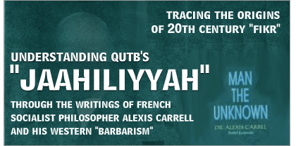
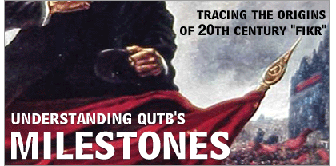

Monday, 11 August 2025
Home
•
About Us
•
Contact Us
HOME
ARTICLES
REPORTS
LOGIN
SEARCH
TAGS
RSS
Articles tagged with "Saudi Government"
RSS Feed
Ali al-Timimi on the Saudi Government Being an Islamic Government and How To Rectify Oppression and Tyranny
Ali al-Timimi on the Saudi Government, Tyranny, and Means of Rectification of the Rulers In this audio recording from prior to the mid 90s, Ali al- ...
Wednesday, December 30 2009 - by
Takfiris.Com


The Revival of the Deen of the Khawaarij in the 20th Century
(
11
)
Latest Articles
ISIS Kharijites Execute One of their Sharia Judges: Hazimi Haddadis and Takfiri Implosion
The Kharijites Do Not Always Make Takfir On Account of Every Major Sin!
Shaykh al-Fawzaan: Applying the Label of 'Kharijite' to Those Involved in Bombings and Who Resemble the Baatiniyyah and Secret Orders
A Lesson from History: The Kharijite Who Engineered the Slaughter of Sunni Scholars at the Hands of the Ubaydi Baatini Shi'ah
The Takfiri Retard Series: Part 6: Abu Waleed Shahid Janjua Redefines Takyeef and Tafweed
Shaykh Abdul-Muhsin: Those Who Have Given Bay'ah to al-Baghdadi (ISIS) Haven Given Bay'ah to a Shaytan (Devil)
Takfiris on Steroids (3): Saudi Member of Jabhah al-Nusrah Executes Two Saudis From ISIS (Daish)
Takfiris on Steroids (2): The Alleged 'Jihad' of 'The Dogs of Hellfire' - ISIS and al-Nusrah in Iraq and Syria
Takfiris on Steroids (1): ISIS Declares Regional Leader of Rival Faction (al-Nusrah) an Apostate and Kills Him
The Takfiri Retard Series: Part 5: Abu Waleed Rewrites the Doctrine of al-Qadar in 30 Seconds Flat
Learn Quranic Arabic Online
try this website
Search This Site
Most Popular
ISIS Kharijites Execute One of their Sharia Judges: Hazimi Haddadis and Takfiri Implosion
Shaykh Abdul-Muhsin: Those Who Have Given Bay'ah to al-Baghdadi (ISIS) Haven Given Bay'ah to a Shaytan (Devil)
Takfiris on Steroids (1): ISIS Declares Regional Leader of Rival Faction (al-Nusrah) an Apostate and Kills Him
Hadeeth: The Kharijites Will Continue to Appear And Be Cut Off Each Time Until The Dajjaal (Anti-Christ) Appears Amongst Their Latter-Day Remnants
Takfiris on Steroids (3): Saudi Member of Jabhah al-Nusrah Executes Two Saudis From ISIS (Daish)
The Leninist Revolutionary Manifesto of Sayyid Qutb
Yusuf al-Qaradawi on Sayyid Qutb: All Muslims Are Apostates (Kuffaar, Mushrikeen) Except Those Who Agree With My Ideology and Join My Group
Takfiris on Steroids (2): The Alleged 'Jihad' of 'The Dogs of Hellfire' - ISIS and al-Nusrah in Iraq and Syria
Shaykh al-Fawzaan: Applying the Label of 'Kharijite' to Those Involved in Bombings and Who Resemble the Baatiniyyah and Secret Orders
The Takfiri Retard Series: Part 6: Abu Waleed Shahid Janjua Redefines Takyeef and Tafweed
Tags
abdullah al-faisal
abdullah el-faisal
absent ummah
abu az-zubair al-azzami
abu muhammad al-maqdisi
abu waleed
abu zubair saleem beg
adam gadahn
adam pearlman
al-ghurabaa
al-hukm
al-maghrawi
al-muhajiroon
al-muhajirun
al-nusrah
alexis carrel
ali al-timimi
ali at-timimi
ali juraisha
anti-semitism
anwar al-awlaki
baatiniyyah
barbarism
bin laden
bin ladin
dajjaal
dajjal
dumb takfiris
fake salafis
fareed abdul-khaliq
fawzan
ghulaat al-murji'ah
gulf war
haakim
haakimiyyah
hafiz muhammad sa'eed
hizb ut-tahrir
hukkaam
ibn jibreen
ibn jibrin
innovated jihaad
isaam barqawi
isis
islamic awakening
istibdaal
jaahiliyyah
jahiliyyah
joseph cohen
kharijites
khawarij
khurooj
kufr bawah
lashkar-e-taiba
laskhar-e-taiba
leninism
leninist takfiris
mental retard
mubaddal
muhammad al-maghrawi
omar bakri
qawaaneen
qutb
qutbis
qutbiyyah
rebellion
revolt
revolutionary vanguard
safar al-hawali
sahwah
salaah as-saawee
salah as-sawi
saleem beg
saleem begg
salman al-awdah
salman awan
saudi arabia
saudi government
sayyid qutb
secular laws
secularism
sinful rulers
suicide bombings
tabdeel
takfeer
takfir
takfir al-mu'ayyan
takfir bil-ayn
takfir of actions
takfir of individuals
takfir of sayings
takfir ul-fi'l
takfir ul-qawl
takfiri movements
takfiris
tyrannical rulers
usama bin laden
usama bin ladin
usamah bin laden
vladimir lenin
yusuf al-qaradawi
yusuf khattab
Archives
© Takfiris.Com. All rights reserved.
Takfiris
Kharijites
Takfir